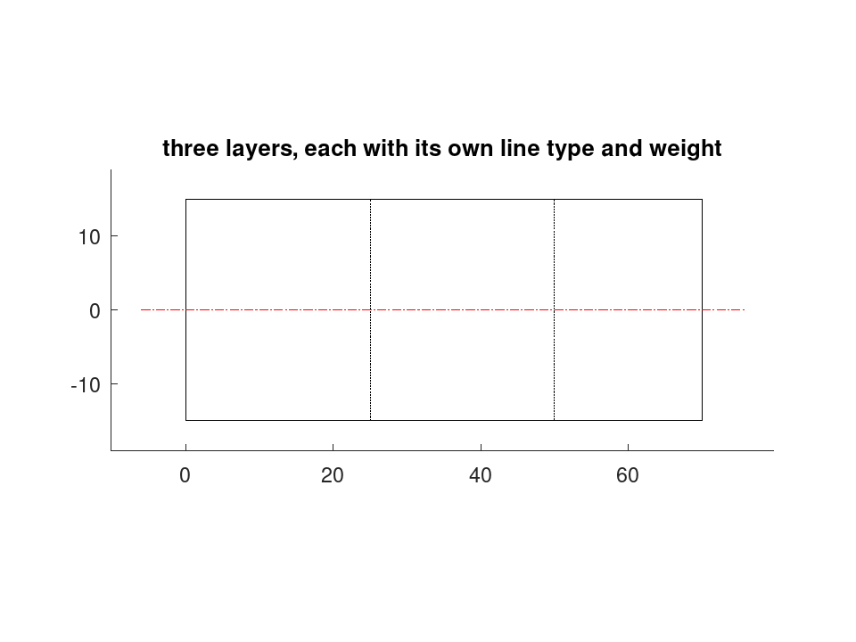
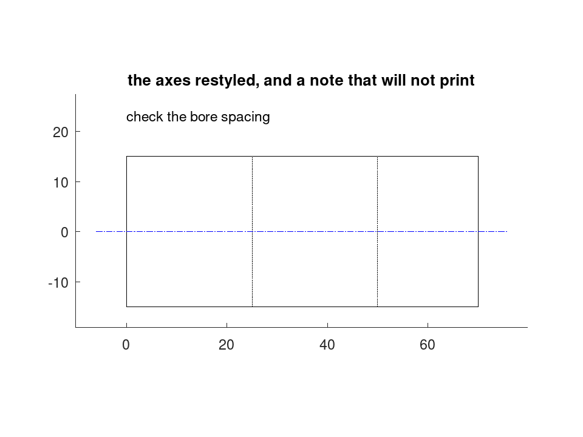
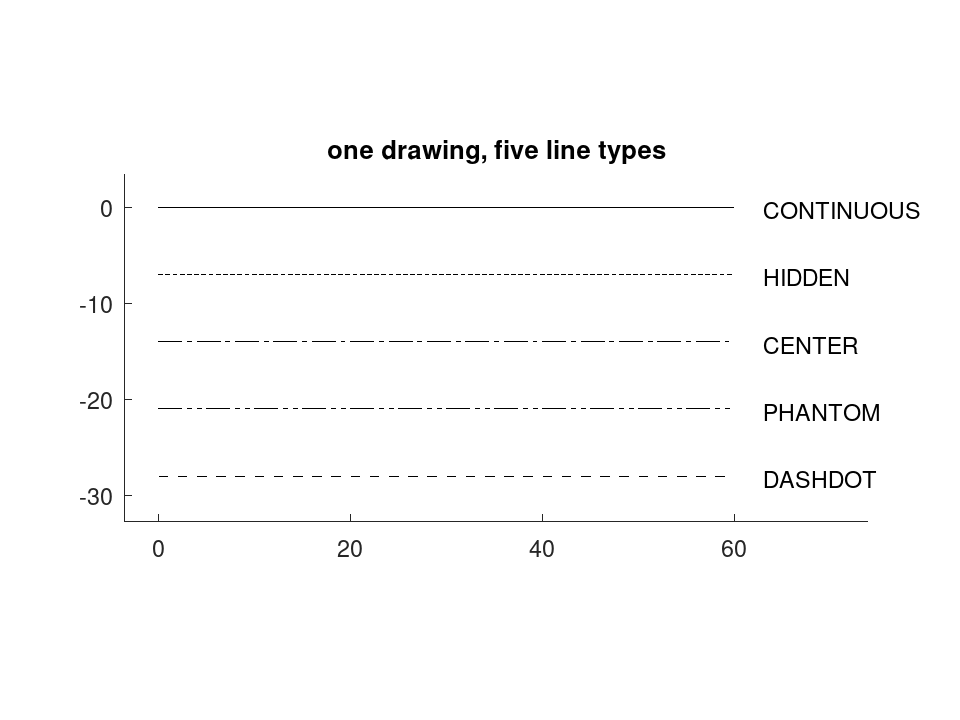
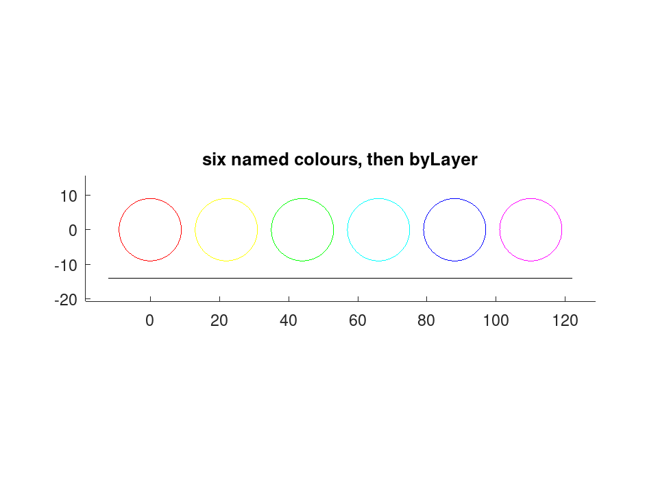

draw.Drawing
drafting: draw.Drawing
A two-dimensional drawing in model space.
draw.Drawing holds an ordered list of drawing entities in
millimetres, each assigned to a named layer, together with the machinery to
append more. It is the single geometry model behind every output format:
the CAD file, the report figure and the screen preview are three renderings
of one draw.Drawing.
The class is a value class, so every method that appends an entity returns a new object and the original is unchanged. Append methods are written to chain:
D = draw.Drawing ('plate');
D.Layer = 'outline';
D = D.polyline (geom.Polyline ([0, 0; 160, 0; 160, 180; 0, 180], ...
'Closed', true));
D = D.circle ([80, 90], 25).text ([0, -20], 'PLATE', 3.5);
|
New entities take the layer, line type, colour and line weight that are
current when they are appended, exactly as a CAD application draws on its
current layer with its current pen. Set Layer, Linetype,
Colour or LineWeight first and then draw; no append method
takes any of them as an argument. Each governs what follows it and never
what came before.
The drawing keeps a layer table, Layers, as a CAD drawing does:
each layer has a colour, a line type, a line weight, and whether it is
visible and printed. Line type, colour and line weight are
'byLayer' unless set otherwise, so an entity takes them from its
layer, and with the layers defined by layer, choosing the current
layer is the one step that sets the pen. Every output resolves them the
same way, and a DXF file carries the table itself.
Properties rather than arguments is what lets a caller state a drawing convention once and then draw against it, which is how a draughtsman works and how CAD is built. It is also why a dimension’s exploded parts inherit the pen: the rule has no exceptions.
Dimensions are stored semantically, as the two measured points, a perpendicular offset and a direction, and are turned into lines, arrowheads and text by whichever backend renders them. Nothing about how a dimension looks is decided here, which is what keeps a dimension truthful when the geometry it measures moves.
A drawing reports what it holds through numentities, layers
and bbox. plot, print and tikz render it,
and write saves it as a DXF file.
See also: draw.Drawing.write, geom.bbox
Source Code: draw.Drawing
The draw.Drawing class contains the following properties:
The name of the drawing, as a character vector. It is carried into the
output wherever the format has somewhere to put it: a DXF file records
it, a TikZ picture writes it into a comment. It defaults to
'untitled' and never affects the geometry.
The name travels with the drawing into whatever the output can hold: a DXF file records it, a TikZ picture writes it into a comment. It never affects the geometry.
D = draw.Drawing ('bracket');
D = D.polyline (geom.Polyline ([0, 0; 60, 0; 60, 40; 0, 40], ...
'Closed', true));
D.Name
ans = bracket
Renaming an existing drawing is an ordinary assignment, because the name is a property and not something fixed at construction.
D.Name = 'bracket rev B'; D.Name
ans = bracket rev B
The layer that entities are placed on as they are appended, as a
character vector. It defaults to '0', the layer every CAD
drawing has.
Like Linetype and Colour, it applies to what is appended
after it is set and never to what came before, so a drawing is
built by setting a property and then adding the entities that belong to
it. Reading it back says where the next entity will go, not where the
existing ones are; for that, use layers.
The current layer is where entities go as they are appended. A layer carries a colour, a line type and a line weight, and an entity takes them from its layer unless told otherwise, so with the layers defined, changing the current layer is the one step that changes the pen.
D = draw.Drawing ('shaft');
D = D.layer ('BODY', 'LineWeight', 0.5);
D = D.layer ('HIDDEN', 'Linetype', 'HIDDEN', 'LineWeight', 0.25);
D = D.layer ('AXES', 'Linetype', 'CENTER', 'Colour', 'red', ...
'LineWeight', 0.25);
D.Layer = 'BODY';
D = D.polyline (geom.Polyline ([0, -15; 70, -15; 70, 15; 0, 15], ...
'Closed', true));
D.Layer = 'HIDDEN';
D = D.line ([25, -15], [25, 15]).line ([50, -15], [50, 15]);
D.Layer = 'AXES';
D = D.line ([-6, 0], [76, 0]);
D.layers ()
ans =
{
[1,1] = 0
[1,2] = AXES
[1,3] = BODY
[1,4] = HIDDEN
}
plot (D);
title ('three layers, each with its own line type and weight');
layer also changes a layer already there, and everything drawn on it follows: the axes turn blue without touching a single entity. A layer that is not plotted is drawn on screen and left off paper.
D = D.layer ('AXES', 'Colour', 'blue');
D = D.layer ('NOTES', 'Plot', false);
D.Layer = 'NOTES';
D = D.text ([0, 22], 'check the bore spacing', 3.5);

figure ();
plot (D);
title ('the axes restyled, and a note that will not print');

The line type that entities are drawn with as they are appended, named
as a character vector: one of CONTINUOUS, HIDDEN, CENTER, PHANTOM,
DASHED, DASHDOT or DOT, or any name a CAD program holds. It defaults
to 'byLayer', which takes the line type of the entity’s layer
from Layers; 'byBlock' takes that of the insert placing
the entity when it is part of a block.
It governs what is appended after it is set, never what came before. The dash lengths themselves are model dimensions scaled by each backend’s line-type scale, not a property of the drawing.
The current line type governs what is appended after it is set. Here one drawing carries five, and each run of geometry keeps the type it was drawn with.
LTScale multiplies the dash lengths, which are model dimensions: on a short line the pattern needs enlarging before it reads as itself.
D = draw.Drawing ('types');
y = 0;
for lt = {'CONTINUOUS', 'HIDDEN', 'CENTER', 'PHANTOM', 'DASHDOT'}
D.Linetype = lt{1};
D = D.line ([0, y], [60, y]);
D = D.text ([63, y - 1.2], lt{1}, 3.5);
y -= 7;
endfor
plot (D, 'LTScale', 2);
title ('one drawing, five line types');

The colour that entities are drawn in as they are appended, as an
AutoCAD colour index from 0 to 256 or as a colour name accepted by
draw.colour. It defaults to 256, which is 'byLayer':
the entity takes the colour of its layer from Layers, which is
how a CAD drawing is normally organised. 0 is 'byBlock', the
colour of the insert placing the entity when it is part of a block.
It governs what is appended after it is set, never what came before.
A colour is an AutoCAD index, or a name that draw.colour resolves to one. It applies to what is appended after it is set.
D = draw.Drawing ('colours');
x = 0;
for c = {'red', 'yellow', 'green', 'cyan', 'blue', 'magenta'}
D.Colour = c{1};
D = D.circle ([x, 0], 9);
x += 22;
endfor
256 is 'byLayer', the default: the entity takes whatever colour its layer carries, which is how a CAD drawing is normally organised.
D.Colour = 256;
D = D.line ([-12, -14], [x - 10, -14]);
plot (D);
title ('six named colours, then byLayer');

The width entities are drawn with as they are appended, in millimetres
of paper, or 'byLayer', the default, to take the weight of the
entity’s layer from Layers, or 'byBlock', to take that of
the insert placing the entity when it is part of a block. A weight is
a width on paper and holds at every scale, as the pens of ISO 128 do.
It governs what is appended after it is set, never what came before.
A struct array with one element for each layer of the drawing and the
fields name, colour, linetype, lineweight,
visible and plot. An entity drawn 'byLayer' takes
its colour, line type or line weight from its layer here.
colourlinetypelineweightvisibleplot Layer '0' is always there, and so is every layer an entity is
on: making a layer current adds it, with colour 7, line type
CONTINUOUS, the output’s own pen, visible and printed. Names are
compared without regard to case, as CAD programs compare them.
layer sets the properties of a layer.
The draw.Drawing class offers the following public methods:
Drawing |
Create an empty drawing, optionally named. |
numentities |
Return the number of entities in the drawing. |
isempty |
Return true when the drawing holds no entities. |
layers |
Return the names of the layers of the drawing, as a sorted cellstr. |
layer |
Define a layer, or set its properties. |
bbox |
Axis-aligned extents of the drawing, as ‘[XMIN, YMIN, XMAX, YMAX]’ in millimetres. |
line |
Append a straight line segment from P1 to P2. |
point |
Append a single point. |
polyline |
Append a polyline. |
spline |
Append a spline. |
path |
Append a path. |
region |
Append a region, drawn as its outline and holes. |
arc |
Append a circular arc centred on C with radius R. |
circle |
Append a full circle centred on C with radius R millimetres. |
ellipse |
Append an ellipse centred at C with semi-axes A and B. |
text |
Append the single-line text S with its insertion point at P. |
hatch |
Append a hatched region. |
dim |
Append a dimension measuring between P1 and P2. |
diam |
Append a diameter dimension across a circle. |
radius |
Append a radius dimension from a centre out to an arc. |
angdim |
Append an angular dimension at a vertex. |
ordinate |
Append an ordinate dimension, the distance of a point from a datum. |
centremark |
Append the small cross that marks the centre of a round feature. |
leader |
Append a leader: an arrow to a feature with a note at its tail. |